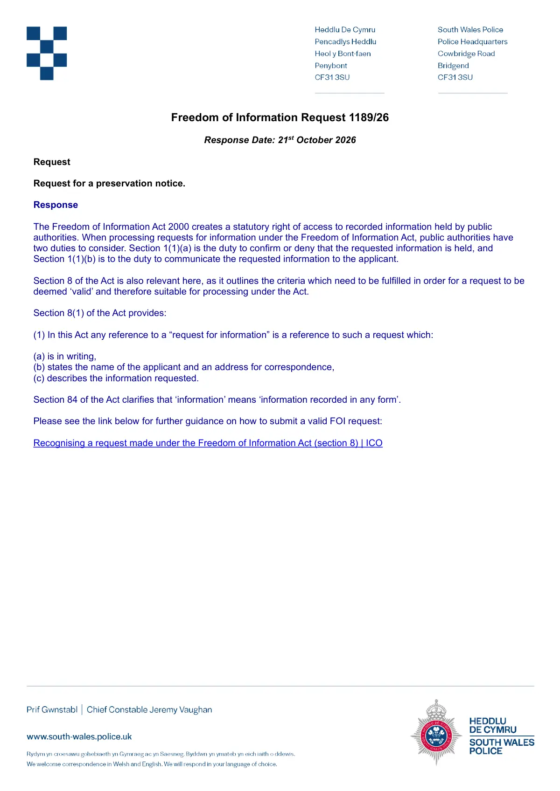

GHF-E106-R62-A1 correspondence (no disclosure)
South Wales Police 1189/26: preservation notice treated as FOI

Transcript
Freedom of Information Request 1189/26 Response Date: 21st October 2026 Request Request for a preservation notice. Response The Freedom of Information Act 2000 creates a statutory right of access to recorded information held by public authorities. When processing requests for information under the Freedom of Information Act, public authorities have two duties to consider. Section 1(1)(a) is the duty to confirm or deny that the requested information is held, and Section 1(1)(b) is to the duty to communicate the requested information to the applicant. Section 8 of the Act is also relevant here, as it outlines the criteria which need to be fulfilled in order for a request to be deemed ‘valid’ and therefore suitable for processing under the Act. Section 8(1) of the Act provides: (1) In this Act any reference to a “request for information” is a reference to such a request which: (a) is in writing, (b) states the name of the applicant and an address for correspondence, (c) describes the information requested. Section 84 of the Act clarifies that ‘information’ means ‘information recorded in any form’. Please see the link below for further guidance on how to submit a valid FOI request: Recognising a request made under the Freedom of Information Act (section 8) | ICO
Artifact description
The force responds to request 1189/26 (a preservation notice) by setting out the FOIA section 8 tests for a valid request; no information is provided (response PDF text included).
| Catalogue ID | GHF-E106-R62-A1 |
|---|---|
| What it is | PDF document from South Wales Police. Attached to an email received on 21 October 2026. 1 page. |
| From | South Wales Police |
| Email received | 21 October 2026 |
| Their reference | none given |
| Pages | 1 |
| File | Response 1189_26.pdf (211 KB) |
| State | Attachment inaccessible, password not supplied |
Our integration
South Wales Police answered the preservation notice (1189/26) by treating it as a freedom-of-information request and setting out the section 8 tests for a valid request. No information was given, and nothing in it confirms that records will be kept.
Concern to test: a preservation notice asks a body to keep records, not to disclose them. Handling it as an FOI request leaves open whether any hold has been placed on the records named. The same request went to other bodies on 29 September 2026; see What They Don't Say.
What cuts against the case: there is no statutory form for a private preservation request. FOIA s.77 (concealing or destroying requested records) applies to requested information, so live FOI requests already have that protection without a separate notice.
Next step: the drafted records-preservation letters of 27 October cite the open request references, so they come under s.77.
Related: GHF-E106-R62-A2 — South Wales Police FOI complaints procedure (with 1189/26) · The covering email · What They Don’t Say: WTDS-705131da-1 · Timeline · Disclosure Dartboard